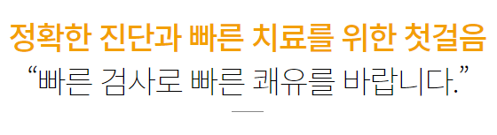

근전도검사

근전도검사란?
근전도검사는 신경과 근육의 이상이 있는지 보기 위한 검사입니다. 근전도검사에는 피부에 전기자극을 주어 검사하는 신경전도검사와 근육에 바늘을 찔러 검사하는 침근전도검사가 있습니다.
근전도검사를 하는 이유는?
근육이나 신경의 정확한 손상부위,손상정도를 판별하여 치료 방향을 올바르게 잡으며예후를 예측합니다.또한 질병이 호전되고 있는지 악화되고 있는지 등을 알 수 있습니다.
정확한 진단과 빠른 치료를 위한 첫걸음
- 손,발이나 팔,다리 저림 증상이 있는 경우
- 당뇨 환자에서 손,발 저림 증상이 있는 경우
- 팔,다리에 힘이 없고 근육이 마르는 경우
- 이유 없이 사지의 근력이 약화되는 경우
- 목,허리 통증이 지속되는 경우
- 표정이 부자연스러워지거나 얼굴이 비대칭으로 변한 경우
- 기타 의사가 필요하다고 권장하는 경우